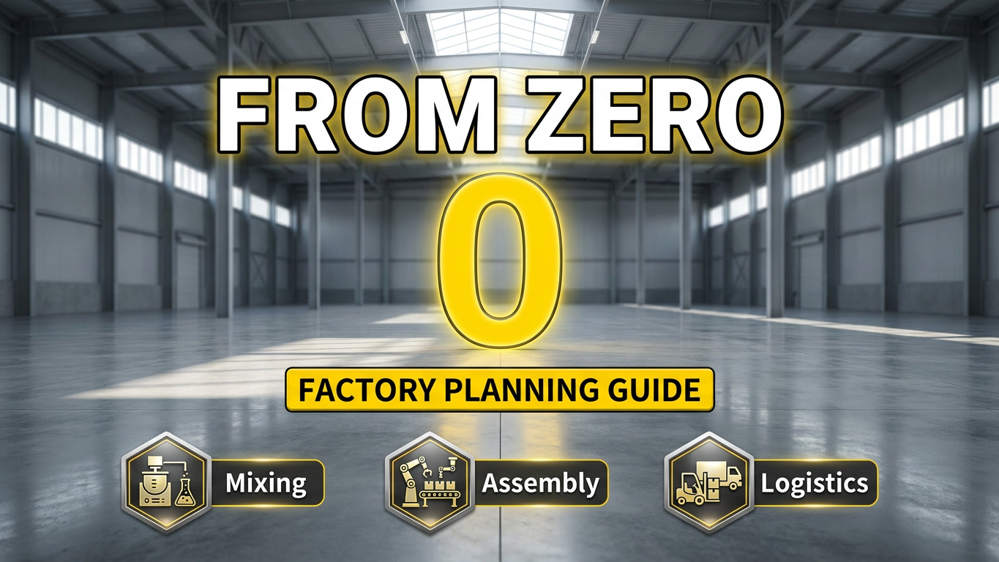

How to Plan a Lithium Battery Factory From Zero? | Complete Battery Factory Layout Guide

Summary
Building a Successful Battery Factory Starts With Smart Planning
The rapid expansion of electric vehicles, energy storage systems, and industrial electrification has created increasing demand for lithium battery manufacturing capacity.
However, building a battery factory is not simply about purchasing production equipment.
A successful lithium battery factory requires careful planning of:
Manufacturing processes
Equipment layout
Material flow
Automation systems
Quality control
Warehouse management
Future expansion capability
Many new battery manufacturers focus first on equipment selection but overlook factory planning. This often creates problems such as:
Inefficient production flow
Material transportation bottlenecks
Difficult equipment maintenance
Limited future expansion
This article explains how to plan a lithium battery factory from zero, including production line design, factory layout strategy, automation integration, and implementation steps.
A professionally designed battery factory can help companies achieve:
Higher production efficiency
Better product consistency
Lower operating costs
Faster production scaling
Technology
- Lithium Battery Factory Planning Technology
- A modern battery factory is an integrated manufacturing ecosystem combining production
- automation
- and logistics.
- The main technology systems include:
- 1. Battery Manufacturing Process Planning
- A complete lithium battery factory includes:
- 1.1. Electrode Production Area
- Including:
- Slurry mixing
- Coating
- Drying
- Calendaring
- Tab cutting
- This stage determines electrode quality and directly influences battery performance.
- 1.2. Cell Assembly Area
- Including:
- Winding
- Hot pressing
- Welding
- Packaging
- This stage requires high precision and stable automation.
- 1.3 Electrochemical Processing Area
- Including:
- Baking
- Electrolyte injection
- Formation
- Capacity testing
- This area requires strict environmental and process control.
- 2. Factory Automation Technology
- 2.1. A smart battery factory integrates:
- Automated transportation
- Production tracking
- Material handling systems
- MES manufacturing management
- Warehouse automation
- 2.2. Automation improves:
- Production stability
- Process visibility
- Manufacturing efficiency
- 3. Intelligent Warehouse Technology
- Finished products and production materials can be managed through:
- ASRS automated storage systems
- Conveyor systems
- Automated material delivery
- Inventory management systems
- This creates a connected production and logistics environment.
Challenge
Why Battery Factory Planning Is More Difficult Than Traditional Manufacturing
Building a battery factory involves multiple complex systems working together.
Poor planning can create expensive problems after production begins.
1. Complex Production Process Integration
Battery manufacturing includes dozens of interconnected processes.
The factory must coordinate:
Raw material preparation
Electrode production
Cell assembly
Testing
Storage
A mistake in one area can affect the entire production workflow.
2. Material Flow Management
2.1. Battery factories require efficient movement of:
Raw materials
Semi-finished products
Finished cells
2.2. Poor material flow causes:
Production delays
Increased handling costs
Lower efficiency
3. Space Utilization Problems
Factories need to balance:
Production equipment
Worker operation space
Maintenance areas
Logistics routes
Future expansion zones
Incorrect layout decisions can limit future growth.
4. Automation Integration Difficulty
Modern battery factories require coordination between:
Production machines
Conveyors
Robots
Software systems
Warehouse automation
Without proper planning, equipment may operate independently instead of as one intelligent system.
Solution
Complete Battery Factory Planning From Process Design to Smart Manufacturing
The right approach begins with factory strategy, not equipment purchase.
1. Analyze Production Requirements
Before designing the factory, evaluate:
Battery type
Target production capacity
Product specifications
Future expansion goals
2. Design Complete Production Flow
The factory layout should follow the manufacturing process:
Raw Material
↓
Electrode Manufacturing
↓
Cell Assembly
↓
Testing
↓
Finished Product Storage
This minimizes unnecessary movement and improves efficiency.
3. Optimize Equipment Arrangement
Equipment placement should consider:
Production sequence
Maintenance access
Material transportation
Safety requirements
4. Integrate Automation Systems
A smart factory connects:
Production equipment
Automation logistics
Warehouse management
Manufacturing software
Creating a complete digital manufacturing environment.
Workflow & Layout
Complete Lithium Battery Factory Layout Planning Process
Phase 1: Factory Requirement Analysis
The engineering team evaluates:
Product Requirements
Battery type
Cell format
Application field
Production Requirements
Annual capacity
Daily output
Expansion targets
Factory Conditions
Building size
Available space
Existing infrastructure
Phase 2: Process Flow Design
Develop:
Production sequence
Equipment arrangement
Material movement route
Example:
#1 Electrode Manufacturing
Material Preparation
↓
Slurry Mixing
↓
Coating
↓
Calendaring
↓
Tab Cutting
#2 Cell Assembly
Electrode Processing
↓
Winding
↓
Welding
↓
Packaging
#3 Testing & Storage
Formation
↓
Capacity Testing
↓
Sorting
↓
ASRS Warehouse
Phase 3: Factory Layout Design
The layout considers:
>> Production Zones
Manufacturing area
Inspection area
Packaging area
>> Logistics Zones
Material receiving
Internal transportation
Finished goods storage
>> Support Areas
Maintenance
Quality control
Office area
Phase 4: Automation Integration
Planning includes:
Conveyor routes
Automated material handling
ASRS warehouse
Software communication
Phase 5: Implementation
Complete:
Equipment installation
System commissioning
Production optimization
Results & ROI
- Business Benefits of Professional Battery Factory Planning
- A well-designed factory creates long-term operational advantages.
- 1. Improved Production Efficiency
- Optimized workflow reduces:
- Material waiting time
- Transportation distance
- Production interruption
- 2. Lower Operating Costs
- Better planning reduces:
- Labor requirements
- Energy waste
- Operational inefficiency
- 3. Faster Production Expansion
- A scalable factory layout allows companies to add:
- New production lines
- Additional automation
- Increased capacity
- 4. Better Quality Control
- A controlled manufacturing environment improves:
- Process stability
- Product consistency
- Traceability
- 5. Reduced Project Risk
- Professional planning helps avoid:
- Equipment conflicts
- Layout reconstruction
- Production delays
Equipment List
- Main Equipment Required for Lithium Battery Factory
- 1. Electrode Manufacturing Section
- Slurry Mixing System
- Coating Machine
- Drying System
- Calendaring Machine
- Tab Cutting Machine
- 2. Cell Assembly Section
- Winding Machine
- Hot Press Machine
- Ultrasonic Welding Machine
- Connector Welding Machine
- 3. Packaging Section
- Mylar Wrapping Machine
- Cell Inserting Machine
- Laser Welding Machine
- 4. Formation & Testing Section
- Baking System
- Electrolyte Injection Machine
- Formation Equipment
- Seal Pin Welding Machine
- Capacity Testing System
- Sorting Equipment
- 5. Automation & Logistics Section
- Conveyor System
- Automated Material Handling System
- MES System
- ASRS Warehouse System
Project Overview / Opening
From Empty Factory Space to Smart Battery Manufacturing Plant
When companies decide to enter battery manufacturing, the first challenge is not buying machines.
The first challenge is creating a factory that can operate efficiently for years.
A successful battery factory requires:
Correct production workflow
Optimized factory layout
Suitable automation level
Reliable logistics system
From raw material input to finished battery storage, every process must be carefully planned.
Professional factory planning helps companies transform an empty industrial space into a high-performance smart manufacturing facility.
Key Points
- Essential Factors When Planning a Battery Factory
- 1. Start With Production Goals
- The factory design must match:
- Target capacity
- Battery application
- Market strategy
- 2. Design Workflow Before Selecting Equipment
- Equipment should support the production strategy.
- Not the opposite.
- 3. Plan For Future Expansion
- A good factory should allow:
- Additional capacity
- Technology upgrades
- Automation improvement
- 4. Connect Production and Logistics
- Smart factories require:
- Manufacturing automation
- Material transportation
- Warehouse integration
- 5. Consider Total Lifecycle Cost
- The best solution balances:
- Initial investment
- Operating cost
- Future scalability
Implementation / Workflow
Battery Factory Planning and Implementation Process
Step 1: Initial Project Consultation
Collect:
Production requirements
Factory information
Investment objectives
Step 2: Technical Evaluation
Analyze:
Manufacturing process
Equipment requirements
Automation opportunities
Step 3: Factory Layout Development
Create:
Production layout
Equipment arrangement
Material flow design
Step 4: Equipment Integration
Coordinate:
Production machines
Automation systems
Warehouse solutions
Step 5: Installation and Production Launch
Support:
Equipment setup
System testing
Production optimization
Customer Value / Results
Helping Companies Reduce Battery Factory Development Risks
Professional factory planning provides customers with:
1. Clear Investment Direction
Customers understand:
Required equipment
Factory requirements
Automation strategy
2. Optimized Production Efficiency
A well-designed factory reduces:
Unnecessary movement
Production bottlenecks
Operating waste
3. Faster Project Execution
Integrated planning improves:
Equipment coordination
Installation efficiency
Production startup speed
4. Long-Term Expansion Capability
The factory can adapt to:
Increased demand
New battery applications
Future automation upgrades
Conclusion / Next Step
Build Your Battery Factory With a Professional Automation Strategy
A successful lithium battery factory starts with proper planning.
From production process design and equipment selection to automation integration and ASRS warehouse solutions, we provide complete battery manufacturing project support.
Our services include:
Battery factory layout planning
Complete production line design
Individual battery equipment supply
Production automation integration
Material handling solutions
Intelligent warehouse automation
If you are planning a new EV battery factory, ESS battery production facility, or upgrading an existing manufacturing plant, contact our team through the Contact page and submit your project requirements.
Please provide information about:
Battery type
Target capacity
Factory size
Required automation level
Our engineering team will help evaluate your project and develop a suitable battery manufacturing solution.
SEO Title
How to Plan a Lithium Battery Factory From Zero? | Complete Battery Factory Layout Guide
SEO Description
Building a Successful Battery Factory Starts With Smart Planning
The rapid expansion of electric vehicles, energy storage systems, and industrial electrification has created increasing demand for lithium battery manufacturing capacity.
However, building a battery factory is not simply about purchasing production equipment.
A successful lithium battery factory requires careful planning of:
Manufacturing processes
Equipment layout
Material flow
Automation systems
Quality control
Warehouse management
Future expansion capability
Many new battery manufacturers focus first on equipment selection but overlook factory planning. This often creates problems such as:
Inefficient production flow
Material transportation bottlenecks
Difficult equipment maintenance
Limited future expansion
This article explains how to plan a lithium battery factory from zero, including production line design, factory layout strategy, automation integration, and implementation steps.
A professionally designed battery factory can help companies achieve:
Higher production efficiency
Better product consistency
Lower operating costs
Faster production scaling
Related Blog
Start with Your Business Challenge
Tell us about your warehouse, factory, or production requirements. We'll help you explore practical automation solutions and relevant project references.